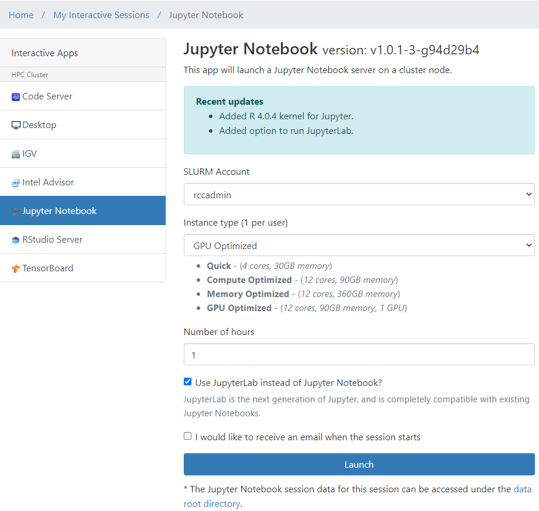
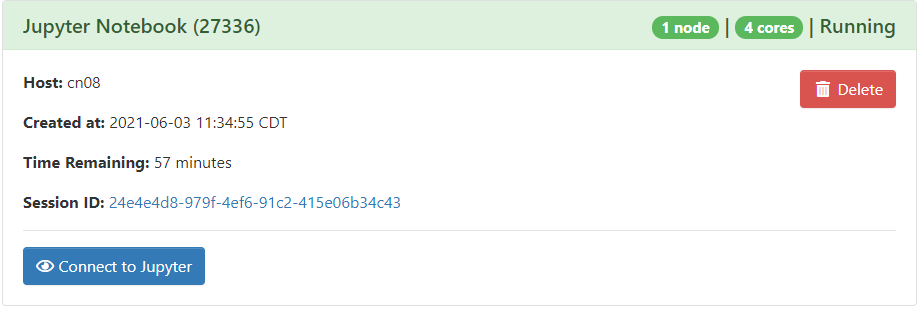

Open OnDemand#
Open OnDemand is a web browser-based interface to RCC computing resources. You can manage files, submit and monitor jobs, and run pre-configured interactive apps such as Jupyter and RStudio. All of this is possible without logging in via a traditional SSH terminal.
Documentation#
This documentation is specific for RCC's Open OnDemand instance. Open OnDemand was created by the Ohio Supercomputer Center, which provides full documentation.
Connecting to Open OnDemand#
Browser Support
No IE 11 support. To have the best experience using Open OnDemand, use the latest versions of Google Chrome, Mozilla Firefox or Microsoft Edge.
On Campus#
To connect to Open OnDemand point your browser to https://ondemand.rcc.mcw.edu. Open OnDemand is configured to use your MCW username and password. Access does require you have an RCC user account.
After login, the Dashboard will appear. The menu includes apps to manage files, submit jobs, monitor jobs, open a terminal session, or launch interactive apps. To end your session, click Log Out at the top right.
Off Campus#
Open OnDemand is available for remote work through Citrix. Please see the remote access guide for details.
To access Open OnDemand, point your Citrix web browser to https://ondemand.rcc.mcw.edu.
Shell Access#
Shell access is available to cluster login nodes. From the Dashboard menu, select Clusters > Cluster Shell Access A new window will open and you will be logged in to a cluster login node. This shell access is the same as if you had used a Terminal app from your desktop (i.e. Putty, SSH Secure Shell, MobaXterm, etc.).
The shell app now supports themes!
You can customize the them of your OOD shell by selecting a new option from the themes drop-down menu in the upper right-hand corner of the window.
Logout!
When you are done with your shell, please logout with the exit or quit commands.
File Management#
The Files menu contains links to common storage locations. Clicking one of the file links opens the File Explorer in a new browser tab.
| Button | Function |
|---|---|
Open in Terminal |
Open current directory in a terminal window in a new browser tab |
New File |
Create a new, empty file |
New Directory |
Create a new directory |
Upload |
Upload a file from your local machine |
Download |
Download selected file to your local machine |
Copy/Move |
Copy selected file to clipboard |
Delete |
Delete selected file |
Show Owner/Mode |
Toggle the display of owner and permission settings |
Show Dotfiles |
Toggle the display of dotfiles (files starting by a ., which are usually hidden) |
Filter |
Filter files/folders by pattern |
Each file and folder will have additional options. Select the ⋮ dropdown menu to rename, download, delete, view (file only), or edit (file only) a single item.
Upload a File#
To upload a file, select the Upload button. Then use the file selector to choose a file to upload. Please note that this only works for individual files. If you need to upload a folder, see Upload a Folder.
Upload a Folder#
On-Campus#
To upload a folder, drag and drop the folder from your local desktop to your OnDemand Files app browser window. As you drag the folder to the window, your cursor should show a copy indicator.
Off-Campus#
If you're off-campus, you'll be accessing OnDemand via Citrix browser. To upload a folder, drag and drop the folder from your Windows File Explorer (Citrix app) to your OnDemand Files app (Citrix browser window). Again, as you drag the folder to the window, your cursor should show a copy indicator.
Job Submission#
Jobs can be created, submitted, and monitored via the Jobs Menu. This is an alternative to creating and submitting job scripts in the command line.
From the Dashboard menu, select Jobs > Job Composer which will open in a new window. The Job Composer app has two tabs: Jobs and Templates The Jobs tab contains a list of all jobs previously submitted through Open OnDemand. The Templates tab allows you to create your own job templates.
Jobs can be created from previous jobs or job templates. See OSC's Job Management Guide for more information.
Create a New Job#
In the Job Composer app, select the Jobs tab. To create a new job script, click the + New Job button and select From Default Template You'll see a new job script entry with status Not Submitted. On the right hand side you'll see the Job Details, including the location and name of the job script.
Edit a Job Script#
The default job template creates a new generic job script. You'll need to edit this job script so that it contains the workflow you'll submit to the cluster. To edit a job script, click the Open Editor button at the lower right.
This will open a job editor in a new tab. You should write your job script following the normal SLURM job syntax. For information on writing SLURM job scripts, see the Job Script Guide. After editing the job script, save the script and close the editor window.
Edit job options#
Click the blue Job Options button. Here you can change the job name and the cluster where the job will run. Click Save or Back to close the job options window.
Submit a Job#
To submit a job, select a job and click the green Submit button. A message at the top of the window will indicate if the job submission was successful or not. After job submission, the job status will change to Queued or Running When the job completes, the status will show Completed
Monitor Jobs#
From the Dashboard menu, select Jobs > Active Jobs for a live view of the cluster queue. You can view all jobs, your own jobs, and select by cluster.
Interactive Applications#
Open OnDemand features several interactive applications that run on cluster nodes and are accessed through the web interface. This allows you to run interactive apps directly in your web browser.
GUI Apps
Some Open OnDemand apps require a Graphical User Interface (GUI). One example is the Remote Desktop app. When starting a GUI app, you can select Compression and Image Quality settings before connecting. Most sessions will run best with minimum compression and maximum image quality. If you have a slow network connection, you can maximize compression and minimize image quality.
Jupyter Notebook Example#
Here we focus on the Jupyter Notebook app as a popular example, but there are many apps to choose from. Check the full app list for details.
To start a Jupyter Notebook on a cluster server:
- From the Dashboard menu, select Interactive Apps > Jupyter Notebook. You'll see two categories in the Interactive Apps drop-down menu. Select for the resource you need.
- The My Interactive Sessions screen will open. Select for the resource parameters that you need. You can also select to be notified by email when your session will start.
 - Click the Launch button to start your Jupyter Notebook session. You may have to wait for cluster resources to become available.
- Once the session starts, click the Connect to Jupyter button. A Jupyter Notebook will open in a new window.
 - To terminate your Jupyter Notebook session, go back to the My Interactive Sessions page and click the red Delete button.
Did you know you can also use your own Python environment in your Jupyter Notebook session?
If you have installed a Python environment in your home directory, then you can generate a Jupyter kernel which can then be used in your Jupyter Notebook session.
# login to the cluster and run the following, replacing myenv with the name of your Python env
$ source activate myenv
$ python -m ipykernel install --user --name myenv --display-name "Python (myenv)"